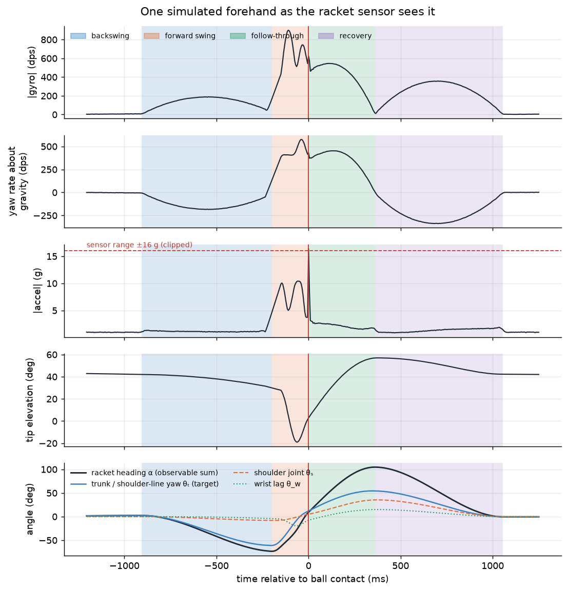
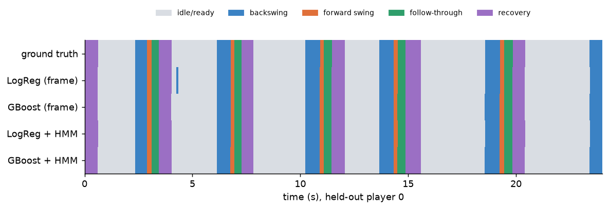
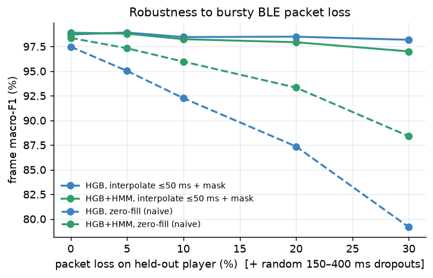
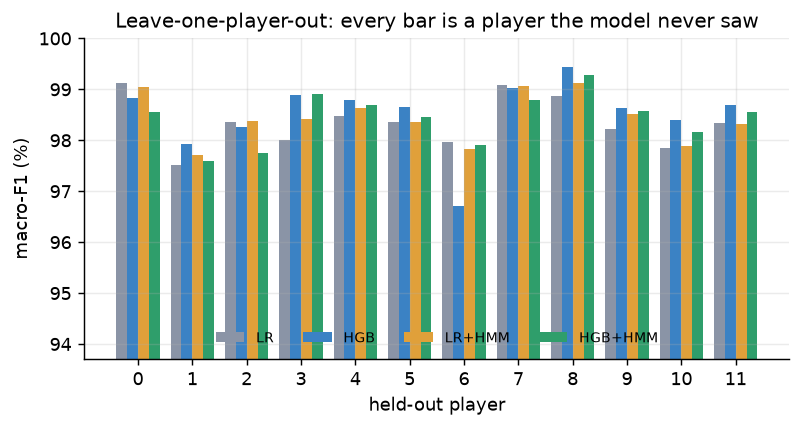
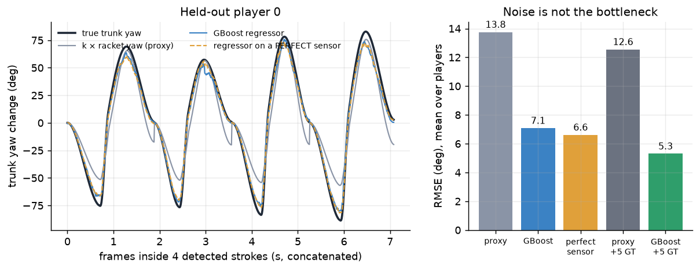
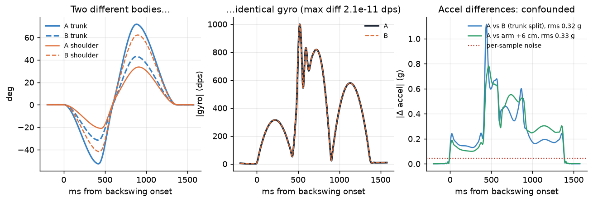

<title>Racket-Only Forehand Study</title>
<meta name="claude:viewport-fit-sides" content="cover">
<meta name="description" content="How far a single racket-mounted IMU gets you in segmenting a tennis forehand and estimating trunk rotation, and where physics stops it.">
<link rel="preconnect" href="https://fonts.googleapis.com">
<link rel="preconnect" href="https://fonts.gstatic.com" crossorigin>
<link rel="stylesheet" href="https://fonts.googleapis.com/css2?family=Barlow+Condensed:wght@500;600;700&family=IBM+Plex+Sans:ital,wght@0,400;0,500;0,600;1,400&family=IBM+Plex+Mono:wght@400;500&display=swap">
<style>
/* Layout: a single reading column on a hard-court ground, with the swing-phase strip as the recurring visual key;
   figures sit on light "plates" so the matplotlib output reads the same in both themes. */
:root {
  --bg: #f3f5f8;
  --surface: #ffffff;
  --ink: #18212f;
  --muted: #566173;
  --line: #d7dde6;
  --accent: #2557a7;      /* hard-court blue */
  --accent-soft: #e4ecf8;
  --plate: #ffffff;
  --ph-idle: #c9ced6;
  --ph-back: #3b82c4;
  --ph-fwd: #e0703a;
  --ph-ft: #2f9e6b;
  --ph-rec: #9b6fc4;
  --good: #1f7a50;
  --warn: #a86512;
  --bad: #b23a3a;
  --f-display: "Barlow Condensed", "Arial Narrow", "Helvetica Neue", Arial, sans-serif;
  --f-body: "IBM Plex Sans", "Segoe UI", system-ui, -apple-system, sans-serif;
  --f-mono: "IBM Plex Mono", ui-monospace, "Cascadia Mono", Consolas, monospace;
  --col: 46rem;
  --wide: 64rem;
}
@media (prefers-color-scheme: dark) {
  :root:not([data-theme="light"]) {
    --bg: #0f1520; --surface: #161e2c; --ink: #e5eaf2; --muted: #9aa6b8; --line: #2a3547;
    --accent: #7aa7ec; --accent-soft: #1d2b44; --plate: #f4f6f9;
    --good: #5cc592; --warn: #e0a252; --bad: #ec7d7d; color-scheme: dark;
  }
}
:root[data-theme="dark"] {
  --bg: #0f1520; --surface: #161e2c; --ink: #e5eaf2; --muted: #9aa6b8; --line: #2a3547;
  --accent: #7aa7ec; --accent-soft: #1d2b44; --plate: #f4f6f9;
  --good: #5cc592; --warn: #e0a252; --bad: #ec7d7d; color-scheme: dark;
}
* { box-sizing: border-box; }
body {
  background: var(--bg); color: var(--ink); font-family: var(--f-body); font-size: 1rem; line-height: 1.6;
  padding-left: max(16px, env(safe-area-inset-left, 0px)); padding-right: max(16px, env(safe-area-inset-right, 0px));
  padding-block: 0 4rem;
}
main { max-width: var(--wide); margin: 0 auto; display: grid; gap: 3.5rem; }
.col { max-width: var(--col); }
h1, h2, h3 { font-family: var(--f-display); font-weight: 600; line-height: 1.08; text-wrap: balance; margin: 0; }
h1 { font-size: clamp(2.6rem, 7vw, 4.4rem); letter-spacing: -0.01em; }
h2 { font-size: clamp(1.8rem, 4vw, 2.4rem); }
h3 { font-size: 1.35rem; font-weight: 600; }
p { margin: 0; }
a { color: var(--accent); }
a:focus-visible, button:focus-visible, summary:focus-visible { outline: 2px solid var(--accent); outline-offset: 3px; }
.eyebrow { font-family: var(--f-mono); font-size: 0.78rem; letter-spacing: 0.08em; text-transform: uppercase; color: var(--muted); }
.stack { display: grid; gap: 1rem; }
.stack-lg { display: grid; gap: 1.6rem; }
.lede { font-size: 1.15rem; color: var(--muted); max-width: 40rem; }
code, .mono { font-family: var(--f-mono); font-size: 0.9em; }
code { background: var(--accent-soft); padding: 0.05em 0.35em; border-radius: 4px; }

/* hero */
header.hero { max-width: var(--wide); margin: 0 auto; padding-block: 3.5rem 1rem; display: grid; gap: 1.4rem; }
.strip { display: flex; height: 14px; border-radius: 3px; overflow: hidden; max-width: 40rem; }
.strip span { display: block; height: 100%; }
.strip-legend { display: flex; flex-wrap: wrap; gap: 0.4rem 1.2rem; font-family: var(--f-mono); font-size: 0.78rem; color: var(--muted); }
.strip-legend i { display: inline-block; width: 0.75rem; height: 0.75rem; border-radius: 2px; margin-right: 0.4rem; vertical-align: -0.1rem; }
.facts { display: flex; flex-wrap: wrap; gap: 0.5rem; }
.fact { font-family: var(--f-mono); font-size: 0.8rem; border: 1px solid var(--line); border-radius: 999px; padding: 0.2rem 0.7rem; color: var(--muted); background: var(--surface); }

/* the honest-limits callout */
.verdict { display: grid; grid-template-columns: repeat(auto-fit, minmax(16rem, 1fr)); gap: 1rem; }
.verdict > div { background: var(--surface); border: 1px solid var(--line); border-radius: 10px; padding: 1.1rem 1.2rem; display: grid; gap: 0.5rem; align-content: start; min-width: 0; }
.verdict .num { font-family: var(--f-display); font-size: 2.4rem; font-weight: 600; line-height: 1; font-variant-numeric: tabular-nums; }
.verdict .k { font-family: var(--f-mono); font-size: 0.75rem; letter-spacing: 0.06em; text-transform: uppercase; }
.k.good { color: var(--good); } .k.warn { color: var(--warn); } .k.bad { color: var(--bad); }

/* steps */
section.step { display: grid; gap: 1.4rem; border-top: 1px solid var(--line); padding-top: 2.2rem; }
.step-head { display: grid; grid-template-columns: auto 1fr; gap: 0.2rem 1rem; align-items: baseline; }
.step-no { font-family: var(--f-display); font-size: 3rem; font-weight: 700; color: var(--accent); line-height: 0.9; grid-row: span 2; font-variant-numeric: tabular-nums; }
.two { display: grid; grid-template-columns: repeat(auto-fit, minmax(19rem, 1fr)); gap: 1.6rem; align-items: start; }
.two > * { min-width: 0; }
ul.clean { margin: 0; padding-left: 1.1rem; display: grid; gap: 0.45rem; }
figure { margin: 0; display: grid; gap: 0.5rem; }
.plate { background: var(--plate); border: 1px solid var(--line); border-radius: 10px; padding: 0.6rem; overflow-x: auto; }
.plate img { display: block; width: 100%; height: auto; min-width: 34rem; }
.plate.narrow img { min-width: 0; }
figcaption { font-size: 0.88rem; color: var(--muted); max-width: var(--col); }

/* tables */
.tbl { overflow-x: auto; border: 1px solid var(--line); border-radius: 10px; background: var(--surface); }
table { border-collapse: collapse; width: 100%; font-size: 0.92rem; }
th, td { text-align: left; padding: 0.55rem 0.8rem; border-bottom: 1px solid var(--line); vertical-align: top; }
tr:last-child td { border-bottom: 0; }
th { font-family: var(--f-mono); font-size: 0.74rem; letter-spacing: 0.05em; text-transform: uppercase; color: var(--muted); font-weight: 500; }
td.n { font-family: var(--f-mono); font-variant-numeric: tabular-nums; white-space: nowrap; }
tr.best td { background: var(--accent-soft); }
.pill { display: inline-block; font-family: var(--f-mono); font-size: 0.72rem; padding: 0.08rem 0.5rem; border-radius: 999px; border: 1px solid currentColor; white-space: nowrap; }
.pill.good { color: var(--good); } .pill.warn { color: var(--warn); } .pill.bad { color: var(--bad); }

/* pipeline diagram */
.diagram { background: var(--surface); border: 1px solid var(--line); border-radius: 10px; padding: 1rem; overflow-x: auto; }
.callout { border-left: 3px solid var(--accent); padding: 0.2rem 0 0.2rem 1rem; max-width: var(--col); }
.eq { font-family: var(--f-mono); background: var(--surface); border: 1px solid var(--line); border-radius: 8px; padding: 0.8rem 1rem; overflow-x: auto; white-space: pre; font-size: 0.88rem; }
details { background: var(--surface); border: 1px solid var(--line); border-radius: 10px; padding: 0.8rem 1rem; }
summary { cursor: pointer; font-weight: 600; }
footer { max-width: var(--wide); margin: 4rem auto 0; color: var(--muted); font-size: 0.88rem; border-top: 1px solid var(--line); padding-top: 1.2rem; }
@media (prefers-reduced-motion: no-preference) {
  .strip span { transform-origin: left; animation: grow 0.7s ease-out both; }
  @keyframes grow { from { transform: scaleX(0.2); } to { transform: scaleX(1); } }
}
</style>

<header class="hero">
  <p class="eyebrow">Sparse-sensor motion inference · first experiment</p>
  <h1>What a racket sensor can and cannot tell you about a forehand</h1>
  <p class="lede">One IMU in the butt cap of the racket: accelerometer, gyroscope and on-board orientation. No camera, no body landmarks.
  We segment every forehand into its phases, time ball contact, and try to recover how far the player's shoulders turned.
  The phases and contact come out well. For the shoulders, the experiment shows where the physics of the sensor stops it.</p>
  <div class="strip" role="img" aria-label="A forehand's phase sequence as a proportional strip">
    <span style="width:22%;background:var(--ph-idle)"></span>
    <span style="width:28%;background:var(--ph-back)"></span>
    <span style="width:8%;background:var(--ph-fwd)"></span>
    <span style="width:15%;background:var(--ph-ft)"></span>
    <span style="width:27%;background:var(--ph-rec)"></span>
  </div>
  <div class="strip-legend">
    <span><i style="background:var(--ph-idle)"></i>idle / ready</span>
    <span><i style="background:var(--ph-back)"></i>backswing</span>
    <span><i style="background:var(--ph-fwd)"></i>forward swing (~125 ms)</span>
    <span><i style="background:var(--ph-ft)"></i>follow-through</span>
    <span><i style="background:var(--ph-rec)"></i>recovery</span>
  </div>
  <div class="facts">
    <span class="fact">200 Hz IMU</span><span class="fact">±16 g · ±2000 dps</span><span class="fact">12 players · 720 forehands</span>
    <span class="fact">leave-one-player-out</span><span class="fact">simulated, physics-based</span>
  </div>
</header>

<main>
  <section class="stack-lg">
    <div class="verdict">
      <div><span class="k good">identifiable</span><span class="num">98.4%</span>
        <p>frame macro-F1 for phase segmentation on players the model never saw. Contact is found 98.1% of the time, within 5.5 ms.</p></div>
      <div><span class="k warn">limited by physics</span><span class="num">7.1°</span>
        <p>RMSE for trunk rotation. A <em>perfect</em> noise-free racket sensor still gets 6.6°, so better hardware or a bigger model does not fix it.</p></div>
      <div><span class="k bad">not identifiable</span><span class="num">21°</span>
        <p>Two bodies whose backswing trunk coil differs by this much produce the <em>same</em> gyro signal, down to 2e-11 dps.</p></div>
    </div>
    <p class="callout col">All data here come from a simulator with known ground truth, because no public dataset pairs racket IMU streams with body kinematics.
    The numbers validate the method and the physical argument. They are an upper bound, not a claim about real players.</p>
  </section>

  <section class="stack-lg">
    <div class="stack col">
      <p class="eyebrow">The whole process</p>
      <h2>From a lossy Bluetooth stream to phases, contact time and a rotation estimate</h2>
      <p>Each box below is a module in the code. The sections that follow go through it in order, covering the six questions in the brief.</p>
    </div>
    <div class="diagram">
<pre class="mermaid">
flowchart LR
  A["Simulated player<br/>trunk · shoulder · wrist split"] --> B["Kinematic chain<br/>to butt-cap IMU"]
  B --> C["Sensor + link model<br/>impact, noise, saturation,<br/>heading drift, packet loss"]
  B --> GT[("Ground truth<br/>labels · contact · trunk yaw")]
  C --> D["Re-grid + gap mask"]
  D --> E["Heading-free features<br/>60 per 10 ms frame"]
  E --> F["Frame classifier<br/>LogReg / GBoost"]
  F --> G["Phase-grammar HMM"]
  G --> H["Contact snap<br/>to impact onset"]
  G --> I["Trunk-rotation regressor"]
  H --> J["Leave-one-player-out metrics"]
  I --> J
  GT --> J
</pre>
    </div>
  </section>

  <section class="step">
    <div class="step-head"><span class="step-no">0</span><p class="eyebrow">Data</p><h2>A simulator that knows the truth</h2></div>
    <div class="two">
      <div class="stack">
        <p>To test the identifiability claims you need the body's true motion next to the sensor's. The simulator builds each forehand from a
        kinematic chain: trunk yaw, then shoulder rotation, arm elevation, wrist lag, then a rigid racket. The IMU sits 12 cm below the hand.</p>
        <p>Racket heading is the <strong>sum</strong> of the joint angles. Players differ mostly in how they split that sum, which is
        the thing the sensor cannot see. Everything a real sensor does wrong is added on top.</p>
      </div>
      <ul class="clean">
        <li><strong>Impact</strong>: a 15–35 g shock along the face normal, plus a twist from off-centre hits</li>
        <li><strong>Saturation</strong>: centripetal load at the butt cap exceeds ±16 g in the forward swing</li>
        <li><strong>Noise and bias</strong>: gyro bias with random walk, accel bias, 1% scale error, mount misalignment of a few degrees</li>
        <li><strong>Orientation</strong>: a 6-axis AHRS with unknown, drifting heading, and tilt error under acceleration</li>
        <li><strong>Link</strong>: 4-sample BLE packets lost in bursts, 150–400 ms dropouts, timestamp jitter and clock skew</li>
        <li><strong>Distractors</strong>: racket twirls, ball bouncing, aborted half-swings, all labelled idle</li>
      </ul>
    </div>
    <figure>
      <div class="plate"></div>
      <figcaption>One forehand from a held-out player. Bands are the ground-truth phases and the red line is ball contact. The bottom panel shows the core issue:
      the dark line (racket heading) is all the sensor sees, and the blue line (trunk) is what we want.</figcaption>
    </figure>
  </section>

  <section class="step">
    <div class="step-head"><span class="step-no">1</span><p class="eyebrow">Feature representation and baseline</p><h2>Use only what gravity can anchor</h2></div>
    <div class="two">
      <div class="stack">
        <p>The orientation output has a heading that wanders by degrees per minute and starts at an arbitrary angle. Any feature that uses
        absolute yaw would fit the drift. Every feature is therefore heading-free:</p>
        <ul class="clean">
          <li>gyro magnitude and body-axis rates; <strong>yaw rate about gravity</strong></li>
          <li>accel magnitude and components, gravity-removed linear acceleration, a saturation flag</li>
          <li><strong>tip elevation</strong> and <strong>face tilt</strong> against gravity</li>
          <li>jerk, which picks out the impact</li>
          <li>window means and spreads at 25, 105 and 305 ms; past-vs-future means; heading change over the last and next 300 ms</li>
        </ul>
      </div>
      <div class="stack">
        <p><strong>Baseline:</strong> multinomial logistic regression, one 10 ms frame at a time. A gradient-boosted tree classifier is the stronger
        frame-wise reference. Neither knows that phases come in order.</p>
        <p>Both get the per-frame label mostly right and then flicker: a few frames of "follow-through" in the middle of a backswing, or two contacts in one stroke.
        The edit score in the results table measures this directly.</p>
      </div>
    </div>
  </section>

  <section class="step">
    <div class="step-head"><span class="step-no">2</span><p class="eyebrow">Temporal model</p><h2>A forehand has a grammar, so make the model obey it</h2></div>
    <div class="two">
      <div class="stack">
        <p>The temporal model is a <strong>left-to-right hidden Markov model</strong> over the classifier's posteriors. The cycle is fixed:</p>
        <div class="eq">idle → backswing → forward swing → follow-through → recovery → idle</div>
        <p>Each phase is a chain of states, so it has a hard minimum duration (0.6 × the 5th-percentile training duration).
        The last state's self-loop matches the mean duration. Emissions are scaled likelihoods <code>p(phase | x) / p(phase)</code>, the hybrid trick from speech recognition.</p>
      </div>
      <div class="stack">
        <h3>Why this model first</h3>
        <ul class="clean">
          <li>It cannot output an illegal sequence, and it gives exactly one contact per stroke.</li>
          <li>It needs about 15 learned numbers (durations and priors), which suits a first experiment with few labelled players.</li>
          <li>Missing frames get a flat emission, so the grammar bridges a dropout instead of guessing.</li>
          <li>It sits on top of any classifier, so the comparison isolates what temporal structure adds.</li>
          <li>A BiGRU or temporal CNN is the next step once real labelled data exist.</li>
        </ul>
      </div>
    </div>
    <figure>
      <div class="plate"></div>
      <figcaption>24 seconds of a held-out player. Frame-wise models flicker. With the HMM the segment sequence matches the ground truth.</figcaption>
    </figure>
    <p class="col">Contact time is the decoded forward-swing to follow-through boundary, snapped to the impact onset: the first sample within ±40 ms
    whose jerk passes half its local peak. The shock is the sharpest event in the signal, so a 5 ms sample grid is the resolution limit.</p>
  </section>

  <section class="step">
    <div class="step-head"><span class="step-no">3</span><p class="eyebrow">Missing and noisy data</p><h2>Re-grid on timestamps, interpolate short gaps, mask long ones</h2></div>
    <div class="tbl">
      <table>
        <thead><tr><th>Problem</th><th>Source</th><th>Handling</th></tr></thead>
        <tbody>
          <tr><td>Bursty packet loss</td><td>BLE, 4 samples per packet</td><td>Re-grid on timestamps; interpolate gaps ≤ 50 ms (quaternion nlerp with sign continuity); mask longer gaps; flat HMM emission on masked frames</td></tr>
          <tr><td>Jitter, clock skew</td><td>Device clock</td><td>Resample by timestamp, never by sample count</td></tr>
          <tr><td>Saturation</td><td>Centripetal and impact loads above ±16 g</td><td>Flag as a feature; never integrate or estimate a radius from clipped samples</td></tr>
          <tr><td>Heading drift</td><td>No magnetometer</td><td>Gravity-referenced features and yaw rates only; integrate yaw within one stroke (~1.5 s)</td></tr>
          <tr><td>Dynamic tilt error</td><td>AHRS accel correction during the swing</td><td>Prefer gyro-derived features at high dynamics</td></tr>
          <tr><td>Distractors</td><td>Twirls, bounces, half-swings</td><td>Labelled idle in training; minimum durations reject short bursts</td></tr>
        </tbody>
      </table>
    </div>
    <div class="two">
      <figure>
        <div class="plate narrow"></div>
        <figcaption>Each held-out player's sessions re-corrupted at higher loss. Dashed lines are naive zero-filling.</figcaption>
      </figure>
      <div class="stack">
        <p>At 30% packet loss, naive zero-filling drops the frame classifier to <strong>79.2%</strong> macro-F1, and the HMM pulls it back to 88.4%.
        With interpolation and masking the classifier holds <strong>98.2%</strong> on its own (97.0% with the HMM, which still guarantees a legal phase order).</p>
        <p>A gap filled with zeros looks like the racket stopped. Most of the robustness comes from telling the model a value is missing instead of inventing one.</p>
      </div>
    </div>
  </section>

  <section class="step">
    <div class="step-head"><span class="step-no">4</span><p class="eyebrow">Validation and metrics</p><h2>Hold out whole players</h2></div>
    <div class="two">
      <div class="stack">
        <p><strong>Leave-one-player-out</strong>, 12 folds. Both sessions of the test player are held out, so none of that player's strokes, mounting offset or style reaches training.
        A random frame split leaks, because neighbouring frames are almost identical. A stroke split also leaks, because style is shared across a player's strokes.</p>
        <p>We report the mean and the <strong>spread across players</strong>. With 12 players, that spread is the honest uncertainty.
        Hyper-parameters were fixed before the run; tuning them needs a nested split inside the training players.</p>
      </div>
      <ul class="clean">
        <li><strong>Frame macro-F1</strong>: phases are imbalanced, and the forward swing is about 5% of frames</li>
        <li><strong>Edit score</strong> and <strong>F1@IoU 0.5</strong>: segment-level scores that penalise flicker</li>
        <li><strong>Contact</strong>: precision and recall within ±50 ms, and timing error in ms</li>
        <li><strong>Boundary error</strong> for onset, racket reversal, end of follow-through and end of recovery</li>
        <li><strong>Rotation</strong>: RMSE in degrees, plus peak-coil error per stroke, the number a coach would use</li>
      </ul>
    </div>
    <div class="tbl">
      <table>
        <thead><tr><th>Model</th><th>Macro-F1</th><th>± players</th><th>Edit</th><th>F1@50</th><th>Contact P / R</th><th>Contact err</th><th>Onset err</th><th>Reversal err</th></tr></thead>
        <tbody><tr><td>LogReg, frame-wise (baseline)</td><td class="n">98.3</td><td class="n">0.5</td><td class="n">93.8</td><td class="n">97.6</td><td class="n">99.4 / 99.4</td><td class="n">6.1 ms</td><td class="n">10 ms</td><td class="n">6 ms</td></tr>
<tr><td>GBoost, frame-wise</td><td class="n">98.5</td><td class="n">0.7</td><td class="n">96.0</td><td class="n">97.2</td><td class="n">98.2 / 99.6</td><td class="n">6.0 ms</td><td class="n">6 ms</td><td class="n">5 ms</td></tr>
<tr><td>LogReg + HMM</td><td class="n">98.4</td><td class="n">0.5</td><td class="n">100.0</td><td class="n">99.8</td><td class="n">97.9 / 97.9</td><td class="n">5.7 ms</td><td class="n">8 ms</td><td class="n">6 ms</td></tr>
<tr class=best><td>GBoost + HMM</td><td class="n">98.4</td><td class="n">0.5</td><td class="n">100.0</td><td class="n">99.8</td><td class="n">98.1 / 98.1</td><td class="n">5.5 ms</td><td class="n">6 ms</td><td class="n">6 ms</td></tr></tbody>
      </table>
    </div>
    <figure>
      <div class="plate narrow"></div>
      <figcaption>Each group is one held-out player. Look at the spread across players, not the mean.</figcaption>
    </figure>
  </section>

  <section class="step">
    <div class="step-head"><span class="step-no">5</span><p class="eyebrow">Body-motion variable and identifiability</p><h2>Trunk rotation: where the sensor runs out of information</h2></div>
    <div class="two">
      <div class="stack">
        <p><strong>Target:</strong> trunk (shoulder-line) yaw change since backswing onset. The onset is <em>detected</em> by the HMM, so the test is end-to-end.</p>
        <ul class="clean">
          <li><strong>Proxy</strong>: k × racket yaw about gravity, where k is the average trunk share fitted on the training players</li>
          <li><strong>GBoost regressor</strong>: racket yaw and its running extremes, elevation, face tilt, |ω|, linear accel, a centripetal radius proxy |a|/ω², and phase</li>
          <li><strong>Perfect-sensor control</strong>: the same regressor fed the exact, noise-free racket pose and forces</li>
        </ul>
      </div>
      <div class="tbl">
        <table>
          <thead><tr><th>Estimator</th><th>RMSE</th><th>Peak-coil err</th><th>r</th></tr></thead>
          <tbody><tr><td>k × racket yaw</td><td class="n">13.8°</td><td class="n">17.7°</td><td class="n">0.95</td></tr>
<tr><td>GBoost regressor</td><td class="n">7.1°</td><td class="n">7.2°</td><td class="n">0.99</td></tr>
<tr><td>GBoost, perfect sensor</td><td class="n">6.6°</td><td class="n">7.8°</td><td class="n">0.99</td></tr>
<tr><td>proxy + 5 GT strokes</td><td class="n">12.6°</td><td class="n">14.6°</td><td class="n">0.95</td></tr>
<tr class=best><td>GBoost + 5 GT strokes</td><td class="n">5.3°</td><td class="n">4.7°</td><td class="n">0.99</td></tr></tbody>
        </table>
      </div>
    </div>
    <figure>
      <div class="plate"></div>
      <figcaption>The perfect-sensor bar is about as tall as the real-sensor bar, so removing all noise does not help. Five ground-truth strokes per player do help, because they reveal that player's trunk share.</figcaption>
    </figure>

    <div class="stack col">
      <h3>A constructive proof</h3>
      <p>Take one forehand and move 40% of the trunk's rotation into the shoulder joint. Racket heading is the sum, so the racket's orientation is unchanged at every instant
      and the gyro signals are identical (max difference 2e-11 dps). The peak backswing coil goes from -52.6° to -31.6°.</p>
      <p>Only the linear acceleration changes, through the lever arm: 0.32 g rms. An arm 6 cm longer, which the model does not know either, changes it by 0.33 g.
      Nothing in the signal separates "more trunk" from "a different body".</p>
    </div>
    <figure>
      <div class="plate"></div>
    </figure>

    <h3>Identifiability ledger</h3>
    <div class="tbl">
      <table>
        <thead><tr><th>Quantity</th><th>From the racket IMU alone</th><th>Why</th></tr></thead>
        <tbody>
          <tr><td>Phase timing, swing tempo, contact time, racket angular velocity</td><td><span class="pill good">identifiable</span></td><td>Measured directly; impact is a sharp transient</td></tr>
          <tr><td>Racket elevation and face tilt against gravity</td><td><span class="pill good">identifiable</span></td><td>Gravity is a fixed reference (degraded by AHRS tilt error at high g)</td></tr>
          <tr><td>Racket head speed</td><td><span class="pill warn">approximate</span></td><td>ω × known racket geometry; the sensor's own velocity needs integration</td></tr>
          <tr><td>Trunk rotation for a calibrated player</td><td><span class="pill warn">partial</span></td><td>A few labelled strokes reveal the player's trunk share; variation within the player stays invisible</td></tr>
          <tr><td>Heading relative to the court</td><td><span class="pill bad">not identifiable</span></td><td>No magnetometer, and indoor fields are distorted. Only relative yaw within a stroke</td></tr>
          <tr><td>Racket position and path beyond ~0.5 s</td><td><span class="pill bad">not identifiable</span></td><td>Double integration drifts quadratically; there is no reliable zero-velocity instant</td></tr>
          <tr><td><strong>Split of racket rotation into trunk, shoulder, elbow, forearm and wrist</strong></td><td><span class="pill bad">not identifiable</span></td><td>3 orientation DoF against 10+ body DoF; see the proof above</td></tr>
          <tr><td>Pelvis vs thorax (X-factor), stance, footwork, knee bend, weight transfer</td><td><span class="pill bad">not identifiable</span></td><td>No sensor on the lower body</td></tr>
          <tr><td>Grip type vs mounting offset vs forearm pronation</td><td><span class="pill bad">confounded</span></td><td>All appear as a constant roll offset</td></tr>
          <tr><td>Contact point relative to the body, ball speed and spin, outcome</td><td><span class="pill bad">not identifiable</span></td><td>No ball observation; vibration only hints at the impact location on the strings</td></tr>
        </tbody>
      </table>
    </div>
  </section>

  <section class="step">
    <div class="step-head"><span class="step-no">6</span><p class="eyebrow">Resolving the ambiguity</p><h2>Ground truth and sensors that would close the gap</h2></div>
    <div class="two">
      <div class="stack">
        <h3>Ground truth</h3>
        <ul class="clean">
          <li><strong>Optical motion capture</strong> (Vicon or Qualisys, 200+ Hz, thorax and pelvis clusters), hardware-synced to the racket IMU. This is the reference.</li>
          <li>Define phase boundaries <strong>kinematically</strong> from the mocap (onset at a trunk yaw velocity threshold, reversal at the racket heading minimum, contact at the impact transient), not by annotators.</li>
          <li>A cheaper option: 2–3 synced high-speed cameras (≥ 120 fps) with multi-view markerless pose. A single camera with 2-D MediaPipe is ambiguous in depth, and trunk rotation happens in depth.</li>
          <li>Sync every stream on the impact shock, which is sharp in all of them, plus a tap at session start.</li>
        </ul>
      </div>
      <div class="stack">
        <h3>Additional sensors</h3>
        <ul class="clean">
          <li><strong>Thorax IMU</strong> (sternum or upper back): measures trunk yaw directly and removes the main ambiguity</li>
          <li><strong>Pelvis IMU</strong>: adds hip-shoulder separation (X-factor)</li>
          <li><strong>Wrist or forearm IMU</strong>, even a smartwatch: splits shoulder from forearm and wrist</li>
          <li><strong>Magnetometer</strong>: court heading outdoors</li>
          <li><strong>Pressure insoles</strong>: weight transfer and stance</li>
          <li><strong>Ball tracking</strong>: contact point and outcome</li>
        </ul>
      </div>
    </div>
    <p class="callout col">The cheapest step is per-player calibration. Five strokes with camera ground truth bring the rotation RMSE from 7.1° to 5.3°.
    A thorax IMU removes the ambiguity entirely.</p>
  </section>

  <section class="step">
    <div class="step-head"><span class="step-no">·</span><p class="eyebrow">Limits and reproduction</p><h2>What this experiment does not show</h2></div>
    <div class="two">
      <ul class="clean">
        <li>The simulator's player variation, noise and phase definitions are plausible, not fitted to real data. Real forehands vary more: open and closed stances, running and defensive forehands.</li>
        <li>Real labels are noisier than kinematic ones, so real scores will be lower. The sim-to-real gap is the first thing to measure.</li>
        <li>Windows are centred, so the pipeline is offline. A real-time version needs causal windows and a fixed-lag decoder, and loses some boundary accuracy.</li>
        <li>Only right-handed forehands. Left-handers mirror the yaw sign.</li>
      </ul>
      <div class="stack">
        <p>Everything here comes from one script on a laptop CPU (Python 3.11, numpy, scipy, scikit-learn).</p>
        <div class="eq">py -3.11 -m venv .venv
.venv\Scripts\python -m pip install -r requirements.txt
.venv\Scripts\python run_all.py
.venv\Scripts\python build_notebook.py</div>
        <p>Run time: about 8 minutes on a laptop CPU. HMM: 150 states.</p>
      </div>
    </div>
  </section>
</main>

<footer>Racket-only forehand study · simulated data with known ground truth · leave-one-player-out over 12 players.</footer>
